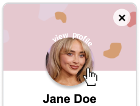
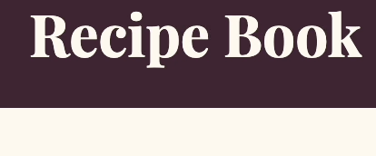
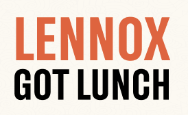

Case Studies
In-depth explorations of design challenges and solutions

LinkedIn Redesign
A 10-week solo redesign of LinkedIn's "Connect" microinteraction, transforming a static button into an engaging, accessible experience through motion design and intuitive user feedback.

Recipe Book Website
A semester-long project exploring modern web design principles through hands-on development, responsive design, and user-focused functionality.

Lennox Got Lunch App
A collaborative 10-week project transforming a food truck brand into a fully functional, mobile-responsive web app with interactive animations and accessible user experiences.
Co-Op Experience
Real-world projects from my professional internships

NBME Accessibility Initiative
Led website accessibility remediation using WCAG guidelines and Axe DevTools, improving digital experiences for all users.

SEPTA Web Content Management
Developed and managed web content using WordPress, creating digital assets and multimedia content for public outreach campaigns.

Comcast DEI Public Policy
Conducted research to support DEI initiatives, fostering inclusive workplace culture and tracking key diversity metrics.
Art
Personal projects exploring design, art, and creative experimentation